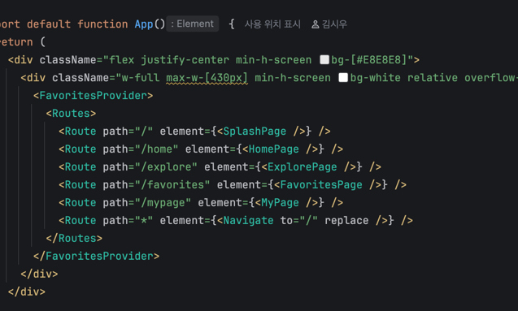
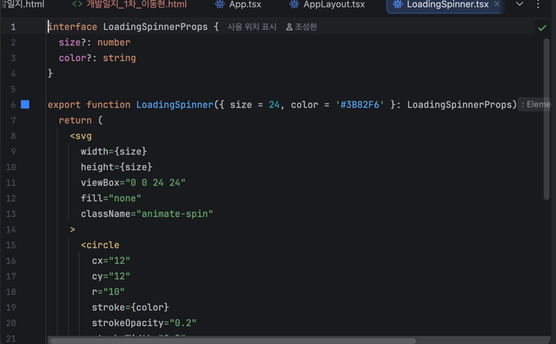

개발일지(1차)
|
개발기간 |
2026년 3월 6일 – 3월 19일 |
||
|
학 번 |
3102 |
성 명 |
김시우 |
|
프로젝트 주제 |
배고 — 위치 기반 식사 추천 서비스 (Web-view App) |
||
|
기능 구현 및 진행상황 |
* 이번 주 목표 및 진행률
- 스토리보드(기능/연동 관점) 작성 — 100% 완료 - 기능/연동 요구사항 명세서 작성 — 100% 완료 - 프론트엔드 개발 환경 초기 세팅 (Vite + React + TypeScript + Tailwind CSS) — 100% 완료 - 레스토랑 타입 정의 및 mock 데이터 작성 — 100% 완료 - useGeolocation 커스텀 훅 기초 구조 설계 — 70% 완료 (GPS 에러 유형별 분기 처리 미완)
* 주요 개발 내용
1. 스토리보드 및 요구사항 명세서 작성 (ver 1.2) - 기능/연동 관점의 앱 동작 흐름 정의: device_id 생성 → 사용자 등록 → 위치 수집 → 식당 조회 → 선택 이력 저장 - 프론트엔드는 Naver API를 직접 호출하지 않고 반드시 프록시 서버(/api/*)를 경유하는 구조 명시 - 요구사항 ID(FR-F-xx), 우선순위, 상태 부여. Geolocation·API 연동·필터링·즐겨찾기·딥링크 5개 영역 정의
2. 프론트엔드 개발 환경 초기 세팅 - Vite 5 + React 18 + TypeScript 5 + Tailwind CSS 3 프로젝트 초기화 - ESLint + tsconfig 설정으로 코드 품질 기준 확립 - 폴더 구조 확정: src/components/, src/pages/, src/hooks/, src/contexts/, src/data/, src/types/ - GitHub 저장소 초기 커밋 및 팀 공유 완료
3. 레스토랑 타입 정의 및 mock 데이터 작성 - Restaurant, Category('전체'|'한식'|'중식'|'일식'|'양식'), DistanceFilter('500m'|'1km'|'2km') 타입 정의 - mockRestaurants 배열: id, name, category, distanceM, rating, address, naverLink 필드 포함 샘플 10건 작성 - 백엔드 API 연동 전까지 mock 데이터로 UI 개발을 선행하는 방식으로 팀 합의
4. useGeolocation 커스텀 훅 기초 구조 설계 - navigator.geolocation.getCurrentPosition() 기반 위경도 수집 로직 구현 - coords(lat/lng), address, loading, error 상태 관리 구조 설계 완료 - GPS 권한 거부 시 mock 위치(강남구 역삼동)로 fallback 처리 (임시 적용, 추후 수동 입력 UI로 교체 예정) - PermissionDenied / PositionUnavailable / Timeout 에러 유형별 분기는 3주차 완성 예정
※ 첨부: 스토리보드 HTML 문서, 요구사항명세서 HTML 문서, GitHub 초기 커밋 화면, 타입 정의 및 mock 데이터 소스코드
 [그림 1] App.tsx 전체 라우팅 구성 소스코드 — React Router 기반 페이지 연결
 [그림 2] LoadingSpinner 공통 컴포넌트 소스코드 — SVG 애니메이션 기반 로딩 UI 구현 |
||
|
이슈 관리 및 해결 과정 |
* 발생한 이슈 (Issue): - 레스토랑 타입 정의 시 Category 타입과 DistanceFilter 타입을 처음에 string 리터럴 유니온이 아닌 enum으로 선언하였음. 이후 Tailwind의 동적 클래스 생성 및 객체 키 매핑 시 enum이 일반 string과 호환되지 않아 타입 에러가 발생함.
* 원인 분석: - TypeScript enum은 런타임에 별도 객체로 컴파일되어 string 인덱싱 시 타입 추론이 다르게 동작함. React + Tailwind 환경에서는 string 리터럴 유니온 타입이 더 적합하며, 특히 Record<Category, ...> 형태의 객체 키로 사용 시 enum은 예상치 못한 동작을 유발할 수 있음. (TypeScript 공식 문서 및 생성형 AI(Claude) 답변을 통해 원인 파악)
* 해결 과정 및 결과 (Resolution): - Category, DistanceFilter 타입을 enum에서 string 리터럴 유니온 타입으로 전환 예) type Category = '전체' | '한식' | '중식' | '일식' | '양식' 예) type DistanceFilter = '500m' | '1km' | '2km' - Record<DistanceFilter, number> 형태로 거리-미터 매핑 객체(DISTANCE_MAP) 정의 가능해짐 - 결과: 타입 에러 해소, useRestaurants 훅 내 필터링 로직 정상 동작 확인
|
||
|
KPT 회고 및 차주 계획
|
* Keep (유지할 점): - mock 데이터를 먼저 작성하고 타입을 기반으로 UI를 선행 개발하는 방식이 백엔드 완성 전에도 진행 가능한 병렬 개발 구조를 만들었음. 팀 속도 유지에 효과적. - 타입 정의를 프로젝트 초기에 확정함으로써 팀원 간 데이터 구조 공유가 명확해짐.
* Problem (문제점/아쉬운 점): - useGeolocation 훅의 GPS 에러 유형별 분기 처리(PermissionDenied/PositionUnavailable/Timeout)가 미완성 상태로 3주차로 이월됨. - 백엔드 API 명세서 응답 포맷이 확정되지 않아 mock 데이터 필드명이 실제 API 응답과 다를 가능성이 있음. 추후 전환 시 수정 비용 발생 예상.
* Try (시도할 점/개선 방향): - 3주차 초 백엔드(이동현)와 API 응답 포맷 싱크 미팅을 통해 mock 데이터 필드명을 실제 응답 구조에 맞게 사전 정렬. - useGeolocation 에러 분기 처리를 3주차 1일 이내 완성하여 GPS 관련 UI 흐름을 조기에 확정.
* 차주(3~4주차) 개발 계획: - useGeolocation 훅 완성 (GPS 에러 유형별 분기, timeout 10초 설정) - useRestaurants 훅 구현 (mock 데이터 기반 카테고리·거리 필터링, 추천 카드 셔플 로직) - SplashPage, HomePage 기본 구조 구현 (조성현 컴포넌트와 연동) - FavoritesContext 구현 (localStorage 기반 즐겨찾기 상태 관리) - 전체 라우팅 연결 (React Router, BottomNav 탭 전환) |
||